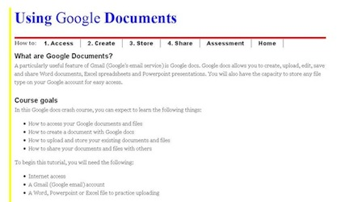

- Google Documents Tutorial
- Created Spring 2010
- As part of an instructional design course, I created this short lesson on how to use the documents feature of Gmail. The lesson teaches users how to access Google docs, create new Google docs, store Google docs and files, and share Google docs and files with others. The lesson ends with a small task to measure what students have learned.
- View full lesson
- 
- Brochure for Trail's End
- Created Spring 2010
- As part of a document design course, I created this full-color trifold brochure. The 'client' was a fictional horse rehabilitation and retirement farm in Minnesota. Photos and content were provided by the instructor; design decisions were entirely up to the students. I consider this one of my most professional-looking pieces. I was inspired by the red on the barn, and added the golden yellow for a very farm-like contrast.
- View Full Version (PDF)


- Web flyer for 2010 Museums Making Connections conference
- Created Spring 2010
- This web flyer was created through a document design course for a real client: the Association of Midwest Museums. The AMM was having its 2010 annual conference in Cleveland, and our class was invited to sumbit design ideas to be used as promotional materials for the conference. While this design was not selected for the conference, it was applauded for its whimsical approach. The image features a dinosaur from the Cleveland Museum of Natural History approaching the Rock and Roll Hall of Fame.
- Design Team: Christopher Chock, Serena Li, Brenna Scurlock and Emily Sutherlin.


{kind=link}